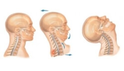
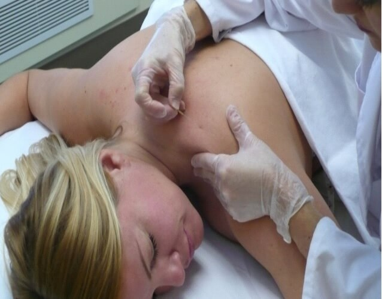
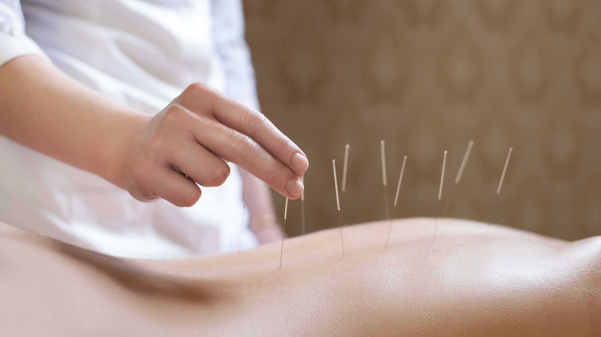
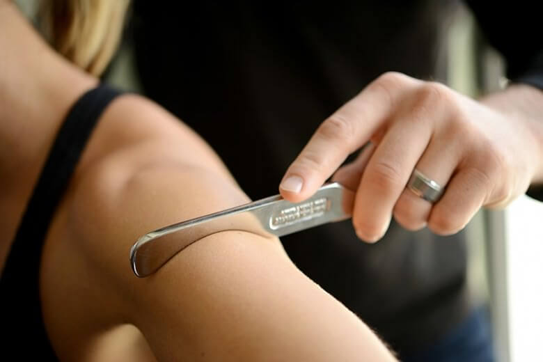
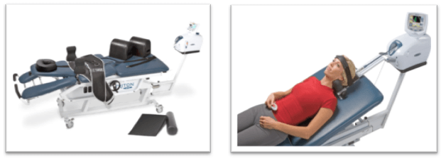
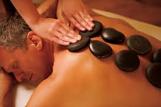

Physical Benefits:
- Relaxes the body
- Calms nervous system
- Lowers blood pressure
- Reduces heart rate
- Slows respiration
- Loosens tight muscles
- Reduces chronic pain
Information pertaining to the high quality services offered by our clinic
Our physiotherapists are highly-educated experts in physical function, movement and mobility. They have advanced knowledge of how the human body moves and what stops it moving and use specialized hands-on treatment to restore, maintain and maximize optimal function and quality of life.
Our physiotherapists assists, diagnose and treat physical symptoms and limited movement caused by injury, aging, disability, or medical condition. They help patients understand what’s causing their condition, and work with them to restore, maintain and maximize movement, flexibility and physical independence.
Our physiotherapists develop customized treatment plans that help patients take back control. They teach patients how to restore, maintain and/or maximize movement, reduce pain, and manage any chronic symptoms.
Our physiotherapists excel in the treatment of many conditions: back pain/injury, whiplash, pregnancy-related muscle/joint issues, urinary incontinence and vertigo to name a few. They also help patients manage symptoms of chronic conditions like arthritis and chronic pain.
Our physiotherapists help patients who may have otherwise tried temporary (e.g., prescription drugs) or more invasive methods (e.g., surgery) to manage their condition. They use individualized therapeutic exercise, manual therapy and other treatment techniques.
Through physiotherapy, many patients are able to recover unrestricted movement which promotes the kind of physical independence necessary for a normal lifestyle and work. When it comes to assessing and treating people with movement problems, the services of a physiotherapist are often essential.
On arrival, you may be asked to fill out paperwork or complete medical history forms. Your physiotherapist will then conduct a detailed assessment of your problem or condition. This takes about 30-45 minutes and normally involves:
Massage Therapy involves gentle hands-on manipulation of the soft tissues of your body. Therapeutic massage focuses on your muscles, connective tissue, tendons, ligaments and joints. Atrium Physiotherapy Registered Massage Therapists manipulate your muscles and other soft tissues of the body with varying degrees of pressure and movement. This helps to relieve pain and tension. If done soon enough after accidents involving trauma and injury, massage can greatly reduce the development of painful muscular patterning.
Massage Therapy is more than a period of relaxation, the therapeutic message helps diminish physical problems caused by stress, back pain, loss of energy, insomnia, etc. Massage can bring physical, mental and emotional changes. The benefits can vary from individual to individual.
Laser Therapy uses red and infrared light for the relief of pain, to accelerate healing and decrease inflammation. When the light source is placed against the skin, the photons penetrate several centimeters and get absorbed by the mitochondria, the energy producing part of a cell. This energy fuels many positive physiological responses resulting in the restoration of normal cell morphology and function. Laser Therapy has been successfully used to treat a broad range of medical conditions, including musculoskeletal problems, arthritis, sports injuries, post-surgical wounds, diabetic ulcers and dermatological conditions.

A personal injury from auto accident trauma is common, but sometimes severe. An injury caused by Motor Vehicle Accident may result in lost work time, and cause difficulties in dealing with day-to-day responsibilities. After you've been injured in a crash, it's vital to get physiotherapy as quickly as possible. Many times, the effects of an auto injury are delayed or subtle. Seek medical advice as quickly as possible to ensure you are adequately treated and protected for the future.
It is easy to sustain neck trauma is when one car collides into another. The passenger in the automobile has their neck jerked back quickly resulting in an injury we know as whiplash.

Whiplash can include: strained muscles and/or ligaments. This kind of neck injury is often associated with tension type headaches and head pain as a result of cervical dysfunction.
Other symptoms of whiplash include: nausea, arm and shoulder pain, and tingling in the hands and fingers. After you've been injured in a crash, it's vital to get physiotherapy evaluation as quickly as possible. Many times, the effects of an auto injury are delayed or subtle. Seek medical advice as quickly as possible to rule out any serious injury, and to ensure you are adequately treated.
If you think you may suffer from whiplash injury, please contact our office to schedule an appointment with one of our Our physiotherapists today. Proper management is critical in the recovery from whiplash injuries and to prevent future damage. We will gladly answer any of your questions and provide you with the best treatment options available to you.
Our Clinic reputation has been built on successfully returning hundreds of MVA patients back to pre-accident function. Our physiotherapist works to expedite your recovery through a closely monitored program that is optimal for you.
Workplace injuries are a common problem. Atrium Physiotherapy offers programs that provide workplace injury rehabilitation.
Atrium Physiotherapy focus on an active injury approach to promote healing, improve active range of motion, restore muscle strength and endurance and restore function, to facilitate early and safe return to work. Whether your workplace injury has occurred from an accident or from overuse, you will find Atrium Physiotherapy programs helpful to:
First: Learn more about WCB and how it works here wcb.ab.ca/workers/
Second: Follow the steps below.
For individuals who has extended health insurance through their employer or their spouse's employer , we can do direct on-line billing for Private insurance companies such as Alberta Blue Cross ,and Great West Life.
If your plan is based on re-embarrassment , we do accept Debit, Visa and Master Card . We will provide you with an official receipt to submit to your private insurance .
our office manager will provide you with the necessary claim forms , and help you filling out the form to accelerate submitting your claim.
Dry Needling is a valuable, effective and efficient adjunct treatment to inactivate myofascial trigger points.
It is an invasive procedure in which a thin solid filament sterile needle is used. Dry Needling involves insertion
and repetitive manipulation of the needle in the myofascial trigger point. The purpose of this technique is to inactivate
the myofascial trigger points by producing a local twitch response. This local twitch response then releases the shortened
bands of muscle fibers. The result is muscle relaxation and pain relief. Eliciting this local twitch response is important
for successful deactivation of the trigger point. No medication of any kind is injected. Inactivation of the trigger points
can bring immediate relief of symptoms.

Acupuncture is an ancient form of Chinese medicine involving the insertion of ultra-fine needles into specific points of the skin.
These points of energy are located along 14 meridians, or channels, that cover the entire body. Using modern techniques, contemporary
medical acupuncture is able to precisely stimulate nerves to modulate pain and other dysfunctions.

Whether there is a presence of a medical condition or not, everybody can benefit from acupuncture due to its homeostatic effects,
which help the body regain balance and function at a more optimal level. Acupuncture has an array of health benefits; it can:
Graston technique is a form of instrument-assisted or augmented soft tissue mobilization (ASTM) that enables practitioners to improve scar tissue,
fascial restrictions and range of motion. The theory behind this IASTM technique is that by using a tool to introduce microtrauma into an area
of excessive scarring and/or soft tissue fibrosis, an inflammatory response will occur. In a 2017 Journal of Exercise Rehabilitation study,
the authors describe that “Such inflammation restarts the healing process by removing the scar tissue and releasing adhesions, while also
increasing blood and nutrient supply to the injured area and migration of fibroblasts.” (1b)
The use of tools helps to get to the root of the problem, but it’s also intended to reduce stress on the therapist’s hands.
Graston technique allows a practitioner to get deep into the problematic tissue yet be sensitive to a patient’s level of pain
tolerance. As the instruments are moved over the affected area and come in contact with adhesions, they help to break up scar
tissue dysfunction and restrictions of the fascia.

In time, this process can reduce or eliminate the adhered fibers, restoring range of motion and eliminating the associated pain.
The aim and ideal outcome of Graston technique is to help transform your soft tissue injury into healthy functioning tissue once again.
Why does Graston technique aim to reduce scar tissue? Scar tissue is thick, dense tissue that appears after injury or trauma. It can
limit your range of motion, cause pain and lead to dysfunctional movement. Graston technique aims to break up this scar tissue to interrupt
and break the cycle of pain and dysfunction.
Graston technique is never used completely on its own. The full treatment includes brief warm-up exercises, Graston technique treatment,
followed by stretching and strengthening activities. Ice can also be a part of the follow-up portion of treatment if subacute inflammation
(inflammation that lasts longer than acute inflammation but is not chronic) is present.
This noninvasive method of healing known as Graston technique or instrument-assisted soft tissue mobilization (IASTM) is used to
treat all kinds soft tissue conditions, whether they are chronic, acute or post-surgical. You may have never heard of Graston technique
before, but other people have, like the 431 professional and amateur sports organizations currently utilizing Graston technique on a regular
basis. (1a) Clearly, some of the most physically active and frequently injured people on the planet must be feeling the relief of this healing
technique!

Spinal Decompression is a non-surgical and drug-free answer for disc related problems of the lumbar or cervical spine. Many
people across the country and around the world have found relief from the pain associated with herniated discs, bulging discs,
facet syndrome, degenerative joint disease, pinched nerves, and other spinal afflictions from decompression therapy. Spinal Disc
Decompression uses computer-aided technology to apply gentle, non-surgical decompression to your
spine which increases circulation into the spinal discs and joints, thus helping to relieve the symptoms that cause pain and dysfunction.

KT Tape® is applied along muscles, ligaments, and tendons (soft tissue) to provide a lightweight, external support that helps you remain active while recovering from injuries.*

Active release technique (ART) treats your body’s soft tissue by combining manipulation and movement. The technique’s been around for more than 30 years.
ART entails identifying, isolating, and targeting the affected area to break up scar tissue. This promotes blood flow and faster healing of injuries.
It was first used by Dr. P. Michael Leahy, a chiropractor, to treat soft tissue disorders in elite athletes and has since been used to treat millions of people.
ART can be used to treat pain and other symptoms caused by injury or damage to:
Benign Paroxysmal Positional Vertigo (BPPV), an inner ear problem, is the most common cause of vertigo. We can normally correct the condition in 1-3 treatments.
Vestibular rehabilitation is a proven treatment for dizziness and balance problems and is highly effective for all age groups.
The vestibular system includes the parts of your inner ear that sense your head position and movement, the nerve pathways that carry that information to your brain, and the parts of the brain that process it.
The brain uses inputs from the vestibular system, visual system and your muscles and joints to maintain your balance, orientation, and the ability to see clearly when you move.
Causes and symptoms of dizziness and balance issues:
Vestibular issues can result from a variety of problems, including inner ear issues and infections, jaw injuries, neck or head trauma, infection, inflammation and certain brain-related issues, and diseases.
Problems in any part of this complex system can result in dizziness, vertigo, unsteadiness and visual issues and associated nausea, vomiting, headaches, fatigue and poor concentration.
Pelvic floor physiotherapy help women rehabilitate their pelvic floor muscles. These muscles can be weakened by childbirth, surgery, heavy lifting, being overweight,
constipation or menopause. The pelvic floor muscles support the womb (uterus), bladder and bowel (colon), forming a 'sling' from the pubic bone at the front to the tailbone at the back.
If the muscles are weak, this can affect bladder and bowel control, resulting in incontinence (leakage) or prolapse.
For other women, their pelvic floor muscles may be overactive; that is, they can switch on involuntarily when they should be relaxing. These women need to learn to
release their muscles. Overactivity can cause difficulty with having sex, emptying the bladder or bowels or using tampons.
This could include exercises, biofeedback (electronic monitoring), and manual treatment of the muscles. Advice about daily activities and fitness,
as well as good bladder and bowel habits, will be given. Functional training of the pelvic floor gets your muscles back working effectively when you need them.
There is good evidence that shows that pelvic floor physiotherapy can help with urinary incontinence and prolapse and can lessen the effects of childbirth and menopause on
the pelvic floor, says Jean Hailes pelvic floor physiotherapist Janetta Webb. A pelvic floor physiotherapist is an important part of the multi-disciplinary team managing bladder
and bowel health, sexual difficulties and pelvic pain. Women should not have to put up with incontinence, pelvic pain or discomfort.
Hot cupping is an ancient form of alternative medicine in which a therapist puts special cups on your skin for a few minutes to create suction. People get it for many purposes, including to help with pain, inflammation, blood flow, relaxation and well-being, and as a type of deep-tissue massage
Combining hot stone protocols with a full body massage provides a very healing and effective experience.
The hot stones also expand blood vessels, which encourages blood flow throughout the body. The hot stones have a
sedative effect that can relieve chronic pain, reduce stress and promote deep relaxation.

A hot stone massage is a type of massage therapy. It’s used to help you relax and ease tense muscles and damaged soft tissues throughout your body.
During a hot stone massage, smooth, flat, heated stones are placed on specific parts of your body. The stones are usually made of basalt, a type of
volcanic rock that retains heat. According to the University of New Hampshire Health Services, hot massage stones are heated to between 130 and 145 degrees.
Wear your favorite shoes and boots while you relieve your foot, knee and lower back pain. Imagine a custom made orthotic to meet all of your lifestyle needs.